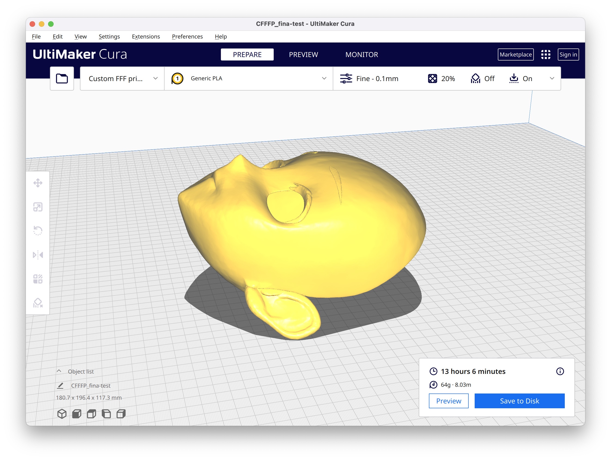

在 Blender 中通过 MMD(PMX)/VRM 制作头壳
本文内容简单介绍 Blender 中通过 MMD(PMX) / VRM 模型制作用于 3D 打印的 Kigurumi 头壳模型的可行方案（总结过程，暂时不包括详细制作过程）

🔧 所需工具
主要工具：Blender - 用于模型编辑
- Blender v3.5.0
- Blender 插件（用于 VRM 格式模型）： VRM-Addon-for-Blender
- Blender 插件（用于 MMD PMX 格式模型）：MMD Tools
模型来源：可通过 VRoidStudio（一个二次元风格捏脸系统）或 MMD 资源站
🍞 所需技能
- 基本的 Blender 使用（无须精通）👉 《Blender 手册》
- 了解 Blender 基本使用流程：能够编辑场景元素、修改 Object 的属性
- 了解 Object 可以通过 Vertex Group、Shape Keys 控制表情、“神态”
- 了解 Blender mesh （bmesh）常识，能够在 editor mode 中完成对多边形点线面基本操作
- 了解 Blender 常用修改器用途，如：Remesh、Solidify、Decimate、Subdivision Surface 等
- 熟悉 Blender UI 能够正确安装、使用插件功能，如：Mesh: 3D-Print Toolbox 插件
🚧 实施流程
- 安装 “所需工具” 中的 Blender 插件，确保插件能够正常运行
- 导入 VRM / PMX 模型文件，同时，清空场景中无用对象
- 在 Sence collection 中，找到与面部相关的 Object（适合于制作 Kigurumi 的 Mesh）
- 新建 Collection，在保留 Vertex Group、Shape Keys 的情况下，清理不必要的 Objects（由于 MMD / VRM 有骨骼等概念被导入 Blender）
- 通过改变 Vertex Group、Shape Keys 的 item 数值调整所需的表情
- “缩放” 调整至所需大小并 “应用缩放（control+a）” 至该模型（确保距离一致性）
- 在编辑模式中，通过 “By Loose part” Separate 该模型，使其能够拆分出需要的 “头模”
- 合并所需 Object（一此时，还没有厚度，同时需要额外处理 Mesh 拓扑结构）
- 删除纹理贴图（为了进一步使用修改器调整 Mesh）
- 使用 Subdivision Surface 修改器增加网格密度并使模型变得更加光滑
- （调整结构）
- 使用 Decimate 修改器降低 Mesh 面数
- 使用 Solidify 修改器为头壳增加厚度
- 使用 Remesh 修改器重构结构，重构后模型将易于 3D 打印
- 通过 Export 导出为 STL 格式文件
.png)
... 好像写了点啥，又好像什么都没写